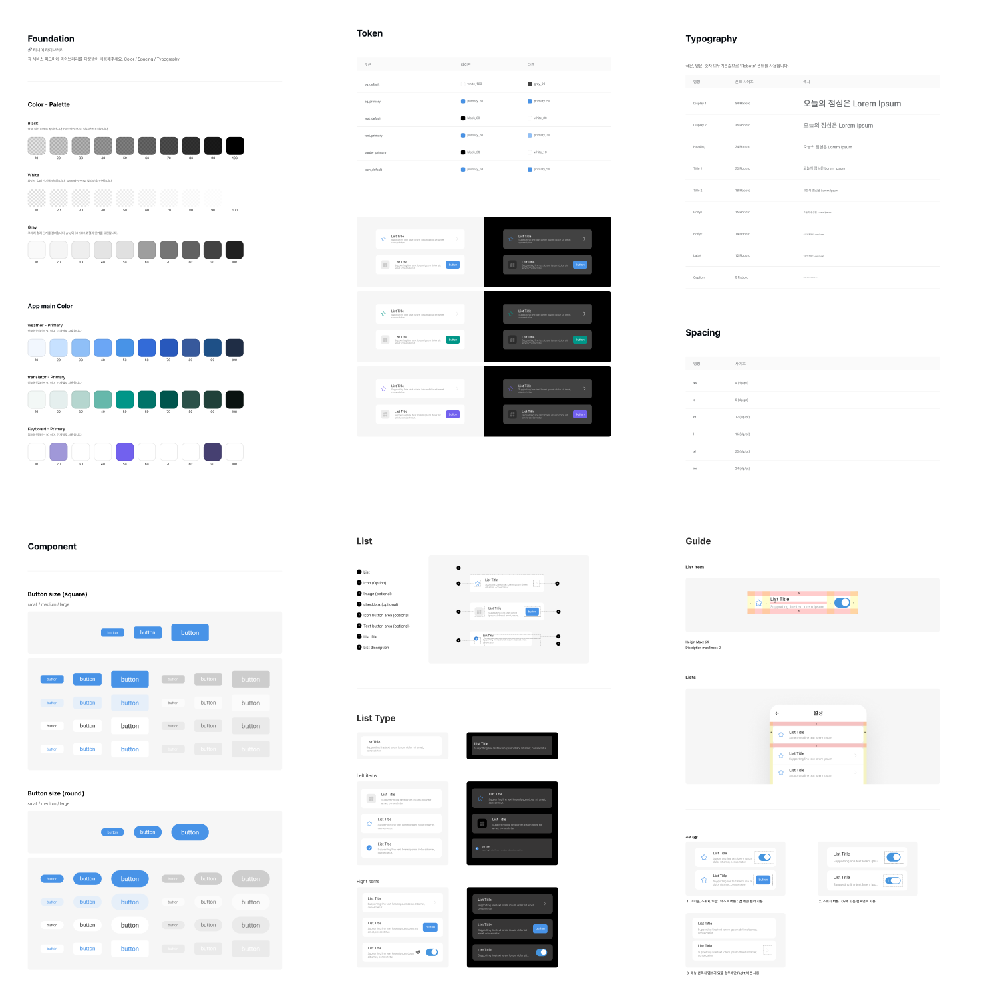
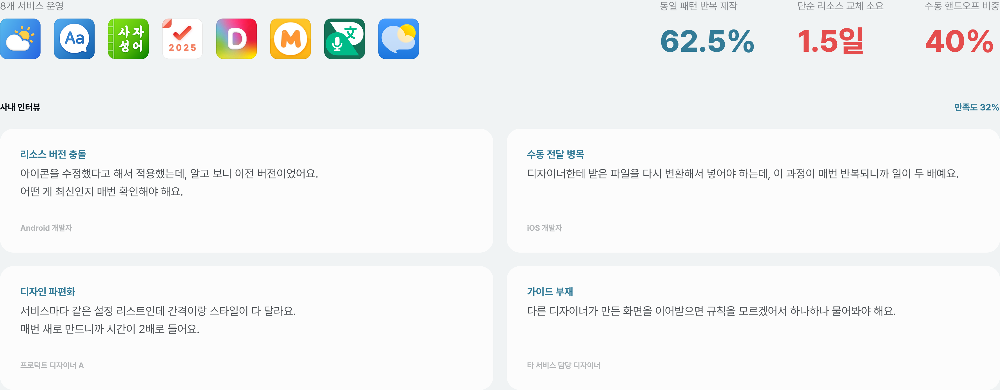
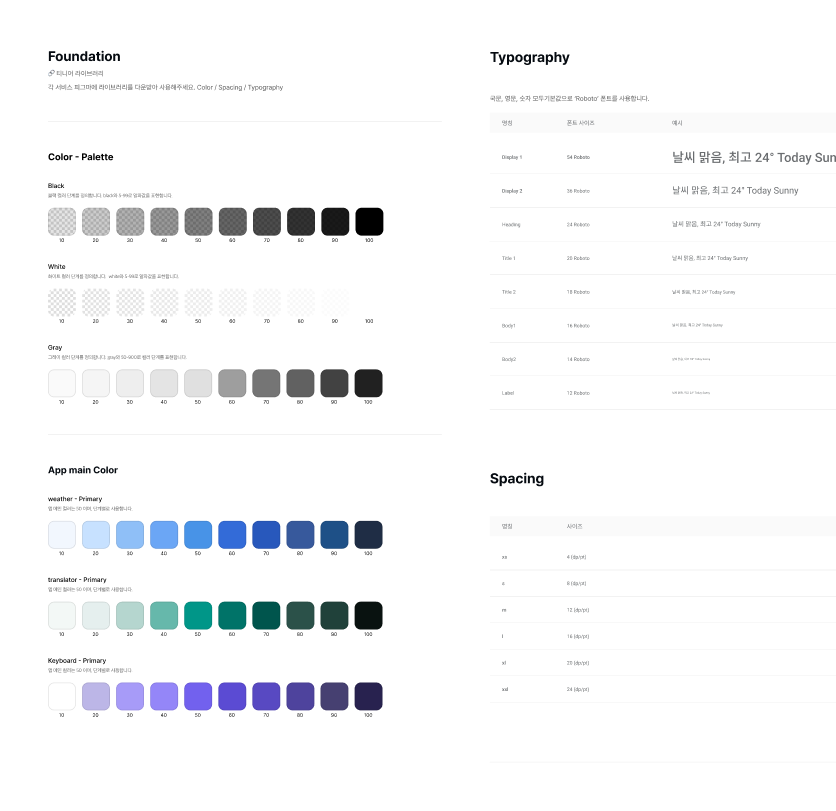
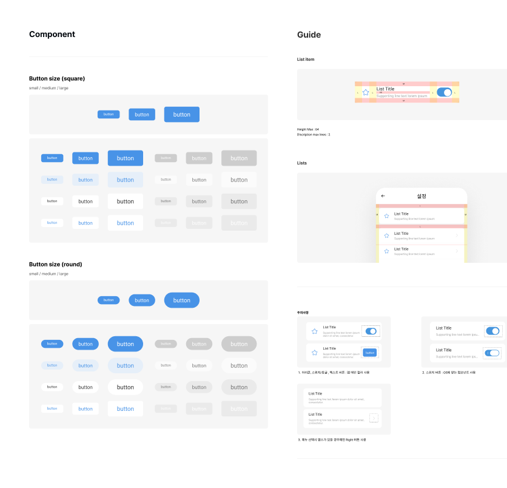
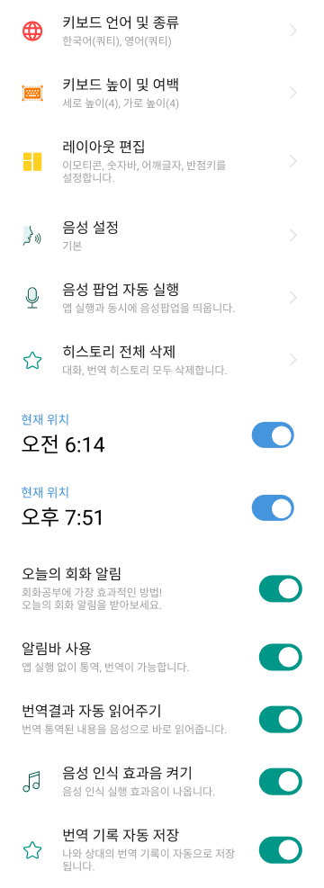
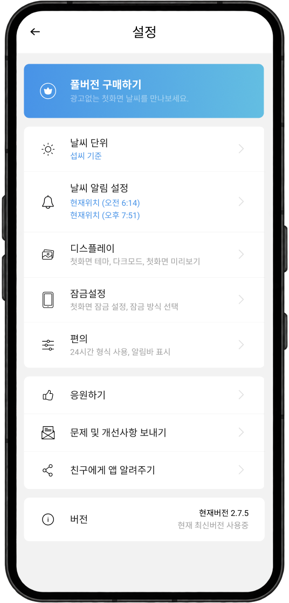
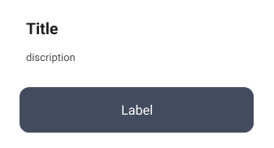
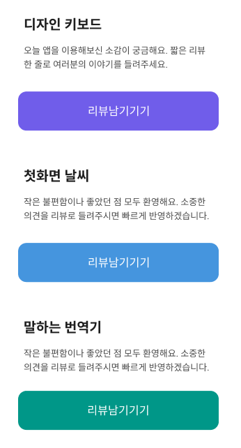
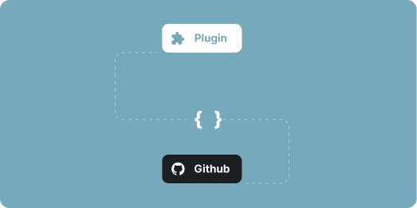
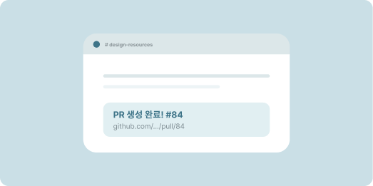

Design Ops
효율 최적화

8개 서비스가 8개 규칙으로 운영되고 있었다
서비스마다 UI 컴포넌트를 따로 설계·관리하다 보니 같은 패턴을 반복 제작하게 되었고, 서비스 간 디자인 일관성도 무너지고 있었습니다.

반복 작업을 끊기 위해
하나의 규칙으로 관리할 구조를 만들었습니다.
8개 서비스가 각자 다른 방식으로 UI를 만들며 반복 작업과 비효율이 누적되고 있었습니다.
하나의 규칙으로 전체 서비스를 일관되게 관리할 수 있는 구조가 필요했습니다.
동일 패턴 반복 제작
SOLUTION 01 표준화된 디자인 시스템 구축
파편화된 전사 서비스의 관리 포인트를
효율적으로 일원화합니다.
중복 리소스 발생
SOLUTION 02 공용 컴포넌트 및 가이드 제공
제작 공수 최소화 및
유연한 대응 체계를 구축합니다.
리소스 전달 2~3일 소요
SOLUTION 03 리소스 전달 자동화
피그마에서 작업 후 바로 플러그인을 통해
버튼 클릭으로 리소스를 코드로 변환·배포합니다.
표준화된 디자인 시스템
및 가이드 구축
컬러, 폰트, 여백을 디자인 시스템으로 하나의 라이브러리로 통합해 한 곳에서 관리하도록 했으며 동일한 컴포넌트를 사용하되, 각 서비스별 프라이머리 컬러에 따라 앱 테마 컬러가 자동으로 변경되도록 토큰을 설계했습니다.
또한 기본 파운데이션을 TNEAR 라이브러리에 구축하고, Color·Spacing 값을 Variables 토큰으로 정의해, 이 가이드에 따라 신규 페이지를 제작할 수 있도록 했습니다.


하나의 컴포넌트로
각 서비스 테마 적용
하나의 디자인 시스템을 기반으로 각 서비스에 맞춰 프라이머리 컬러, 폰트 크기 등의 토큰을 유연하게 조율할 수 있도록 설계했습니다.
컴포넌트 구조는 그대로 유지하면서 컬러·타이포 토큰만 교체해 서비스별 톤앤매너를 빠르게 반영할 수 있도록 구성했습니다.
또한, 토큰 단위로 관리해 디자인 일관성을 유지하면서도 서비스마다 다른 아이덴티티를 표현할 수 있도록 확장성을 고려했습니다.




디자인 리소스 및 GitHub
자동 배포 관리 프로세스
제각각인 리소스 명칭과 수동 업로드로 인해 빈번했던 휴먼 에러를 해결하고자, 디자인과 개발 간의 리소스 자동화 시스템을 직접 기획하고 추진했습니다.
Figma의 아이콘·이미지·베리어블 데이터(JSON, HTML)를 사내 전용 플러그인으로 추출해 GitHub 리포지토리에 자동 반영하는 프로세스를 구축했고, 디자인과 개발의 리소스 환경을 상시 동일하게 유지하고 협업 효율을 높였습니다.
Figma 작업을 마치면 사내 전용 플러그인에서 버튼 한 번으로 아이콘·이미지·베리어블을 한꺼번에 내보냅니다.

추출한 리소스를 JSON·HTML로 변환해, 약속된 경로와 명명 규칙에 맞춰 리포지토리에 그대로 올립니다.

업로드가 끝나면 PR이 자동 생성되고 #design-resources 채널로 전달돼, 개발자가 바로 확인하고 병합합니다.
측정 · 시스템 도입 후 1년
8개 서비스 기준
신규 페이지 제작 시간
리소스 전달 1.5일 → 10분
통합 시스템 만족도
인터뷰 32% → 87%
리소스 전달 소요
기존 2~3일에서 단축
8개 서비스 안정 운영
유지보수 비용 감소
반복되는 문제는
시스템으로 해결해야 한다.
병목을 Figma 플러그인으로 직접 해결하며,
문제를 발견하면 프로세스 자체를 바꾸는 것이
시니어의 역할임을 배웠습니다.
개발자가 쓰는 컴포넌트가
곧 내가 설계한 시스템이다.
DS의 품질은 "예쁜가"가 아니라
"개발자가 찾아서 바로 쓸 수 있는가"에
달려있다는 걸 깨달았습니다.
좋은 디자인 시스템은
사라지는 시스템이다.
1년간 안정 운영된다는 건 '의식하지 않고
자연스럽게 쓴다'는 뜻입니다. 존재감 없이 작동하는
시스템이 가장 잘 만든 시스템이라고 생각합니다.